RFID-GL (2011-11-20 기출문제)
1과목: RFID 시스템 개요
1. 다음 중 RFID 시스템의 구성요소가 아닌 것은?
- 리더(Reader)
- 태그(Tag)
- 유저(User)
- 안테나(Antenna)
(정답률: 89%)

2. 다음 중 RFID에 대한 기본 설명으로 옳지 않은 것은?
- 안테나, Interrogator, Transponder로 구성되어 있다.
- 주로 사람, 차량, 상품, 교통카드 등을 근접접촉으로 인식하는 기술이다.
- 리더는 컴퓨터에 연결되어 운용된다.
- 태그는 고유 아이디(Unique ID)를 가진다.
(정답률: 69%)
3. EPC 글로벌에서는 데이터 기록 방식에 대한 표준은 세 종류의 데이터 타입으로 성립된다. 다음 중 이에 해당하지 않는 데이터 타입은?
- 48bit
- 64bit
- 96bit
- 128bit
(정답률: 63%)
4. 다음 중 태그의 분류에 대한 설명으로 옳지 않은 것은?
- 태그는 읽기/쓰기 능력, 전원 유무, 리더－태그 간 Air Interface로 구분할 수 있다.
- 수동형 태그는 태그에 배터리가 없으며 10m 이상 원거리 통신용이다.
- 한 번 쓰고 여러 번 읽기형(WORM) 태그는 데이터 기록 후 변경이 불가능하다.
- 능동형 태그는 태그에 배터리가 부착되어 있고, 비교적 고가이다.
(정답률: 84%)
2과목: RFID 기술
5. 다음 중 유도 결합 방식이 아닌 것은?
- 유도 결합에 의한 태그로의 전력 전송
- 후방 산란 변조에 의한 데이터 전송
- 부하 변조에 의한 데이터 전송
- 밀접 결합에 의한 태그로의 전력 전송
(정답률: 64%)
6. 다음 중 칩리스 태그(Chipless Tag)의 장점이 아닌 것은?
- 전자파 간섭이 없다.
- 스파크나 전기적인 쇼크에 강하다.
- 저온이나 고온에서도 동작이 양호하다.
- 크기는 칩태그보다 작다.
(정답률: 59%)
7. 전자파의 회절(Diffraction)에 대한 설명 중 옳지 않은 것은?
- 모서리에 부딪친 전자파의 일부가 모서리 뒷면으로 전달되는 방법이다.
- 회절은 송신기와 수신기가 모서리 같은 표면을 만나면 발생한다.
- 회절이 발생하는 모서리에서 입사하는 전파의 크기, 위상, 편파에 따라 그 특성이 달라진다.
- 회절은 물 표면에 막대기를 놓으면 막대기가 꺾여 보이는 현상과 같다.
(정답률: 56%)
8. RFID 시스템에서 태그의 방향성을 무시하기 위해 리더에서 사용하는 편파 방식은 무엇인가?
- 수직편파
- 수평편파
- 타원편파
- 원형편파
(정답률: 68%)
9. RFID에서 사용하는 다음과 같은 인코딩에 대한 설명으로 옳은 것은?
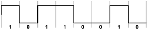
- 논리상태 1의 신호를 고(HIGH)로, 논리상태 0을 저(LOW)로 표현하며 FSK와 PSK 변조와 함께 사용한다.
- 각 비트마다 한 번씩 변화를 갖기 때문에 직류 성분을 포함하지 않는다.
- 태그에서 리더로 부캐리어를 이용하여 부하 변조를 하여 보낼 때 이용된다.
- 바이너리 코드신호를 캐리어 신호의 진폭에 변조 하여 표현하는 기법이다.
(정답률: 52%)
10. 다음 그림이 나타내는 인코딩 방식은 무엇인가?
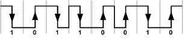
- PIE(Pulse Interval Encoding)
- 밀러(Miller)
- NRZ(Non Return to Zero)
- 맨체스터(Manchester)
(정답률: 61%)
11. 진폭(μ0,μ1)의 비를 나타내는 계수로 듀티 팩터(m, Duty Factor)를 정의해서 사용한다. 듀티 팩터를 정의하는 식으로 옳은 것은?
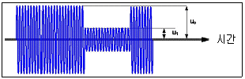
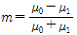
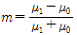
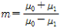
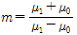
(정답률: 65%)
12. 다음 중 리더와 태그 간의 결합에 대한 설명으로 옳지 않은 것은?
- 근거리장에서 리더와 태그 간에 전력 전송은 리더와 태그 간의 인덕터 간의 유도 결합에 의해 가능하다.
- 전자기파에서 후방 산란 변조는 리더기가 태그에 신호(에너지)를 보내면 그 에너지 모두를 반사함으로써 태그 정보를 보내는 것이다.
- 전자파를 이용한 리더기와 태그 간의 전력전송 방식은 고주파 안테나를 통해서 이루어진다.
- 비반도체 태그 칩리스 태그방식과 관련하여 칩태그 고유의 ID는 반사가 뛰어난 물질 표면에 고유한 패턴을 새겨 넣는 방식이다.
(정답률: 50%)
13. 주파수 910MHz의 UHF 대역 안테나를 설계할 때 반파장 다이폴 타입 태그 안테나의 길이로 적합한 것은?
- 16.5cm
- 30cm
- 2.1cm
- 6.5cm
(정답률: 63%)
14. 다음 중 스트랩을 태그 안테나에 부착하기 위한 방법이 아닌 것은?
- 전도성 필름
- 에폭시에 UV를 가하는 방법
- 에폭시에 열을 가하는 방법
- 유도성 필름
(정답률: 58%)
15. EPCglobal 클래스1 GEN2 태그의 메모리 구조 중 user 메모리 영역의 기능은 무엇인가?
- 태그를 무력화하거나 잠금하는 데 필요한 암호가 저장되는 곳이다.
- 실질적인 태그의 정보(ID)가 저장된 곳이다.
- 사용자의 데이터를 저장하는 공간이다.
- 태그의 ID 정보를 가지고 있는 메모리이다.
(정답률: 68%)
16. 다음 중 리더의 명령어에 대한 설명으로 옳지 않은 것은?
- 리더의 명령어는 선택(Select) 명령, 인벤토리(Inventory) 명령, 접근(Access) 명령이 있다.
- 선택(Select) 명령은 인벤토리 및 접근 명령의 수행을 위해 다수의 태그를 선택하는 절차이다.
- 접근(Access) 명령은 태그의 메모리 내용을 읽거나 바꾸거나, 또는 메모리 뱅크를 잠그거나, 태그를 무력화(kill)하거나, 태그에서 생성한 16비트 난수를 요청할 때 사용된다.
- 인벤토리(Inventory) 명령은 선택 명령을 통해 나온 다수의 태그의 입력정보를 바꿀 수 있는 명령이다.
(정답률: 46%)
17. 아날로그와 디지털 인터페이스는 RFID 규격을 원활 하게 지원하고, 리더와 태그 통신에 사용되는 정보를 주고받는다. 다음 중 아날로그와 디지털 인터페이스 신호가 아닌 것은?
- 태그 칩 공급 전압(VDD)
- 클록 신호(Vclk)
- 슬롯 카운터(slot counter)
- 베이스밴드 신호 출력(DATA OUT)
(정답률: 44%)
18. 다음 중 리더의 무선 송신기의 특성이 아닌 것은?
- 수신감도(Sensitivity)
- 정확성(Accuracy)
- 효율성(Efficiency)
- 유연성(Flexibility)
(정답률: 49%)
19. 리더의 구성 중 프로세서부의 기능과 가장 거리가 먼 것은?
- 태그에 전달할 고주파 신호를 발생하는 기능을 한다.
- 리더의 기본적인 OS(Operation System)를 제공한다.
- 리더의 기능을 제어한다.
- 리더의 메모리를 제어한다.
(정답률: 44%)
20. 다음 중 바이스태틱(bistatic) 리더와 모노스태틱(monostatic) 리더에 대한 설명으로 옳지 않은 것은?
- 바이스태틱 리더는 모노스태틱 리더에 비해 송ㆍ수신 안테나를 구분해서 사용한다.
- 모노스태틱 리더는 안테나, 송신부 그리고 수신부를 연결하기 위해 서큘레이터(circulator)를 사용한다.
- 바이스태틱 리더의 안테나는 2개이다.
- 모노스태틱 리더의 가격이 바이스태틱 리더의 가격보다 높다.
(정답률: 77%)
21. 다음 중 리더의 구성에 대한 설명으로 옳지 않은 것은?
- 리더는 송신부와 수신부로 이루어진다.
- 리더의 송신부는 신호를 발생하는 발진기와 변조기로 이루어져 있다.
- 리더의 수신부에는 복조기가 포함된다.
- 수신부와 송신부에서 전력 증폭기는 선택사항으로 필요하지 않을 때에는 사용하지 않아도 된다.
(정답률: 39%)
22. 태그에서 얻은 정보를 서버로 전송하는 방식 중 고정형 리더에서 사용하는 인터페이스와 가장 거리가 먼 것은?
- RS-232
- USB
- 이더넷(Ethernet)
- 블루투스(Bluetooth)
(정답률: 57%)
23. 리더의 송신기에서 신호가 부드럽게 켜지고 꺼질 수 있도록 하는 방법은 무엇인가?
- OOK(on-off keying)
- 가변감쇄기
- 전력증폭기
- 복조기
(정답률: 72%)
24. 리더와 외부의 인터페이스를 위해 사용하는 다양한 통신 포트 중 성격이 다른 하나는?
- RS-232
- RS-422
- WLAN
- USB
(정답률: 57%)
25. 다음 중 태그의 RCS 측정 구성요소가 아닌 것은?
- 회로망 분석기
- RCS 측정기
- 송ㆍ수신 안테나
- 태그 샘플
(정답률: 29%)
26. 안테나 유효면적에 대한 설명 중 옳지 않은 것은?
- 수신 안테나의 수신 성능을 안테나 종류에 상관없이 특성화하기 위해 도입한 개념이다.
- 안테나의 물리적 면적과 안테나 유효면적은 반드시 일치한다.
- RFID 시스템에서 사용되는 안테나에는 리더용과 태그용 두 가지가 있다.
- 안테나 유효면적은 안테나의 수신 전력과 입사 전력밀도의 비이다.
(정답률: 64%)
27. 다음이 설명하는 것은 무엇인가?
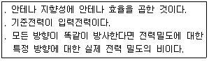
- 안테나 총전력
- 안테나 편파
- 안테나 이득
- 안테나 편파 정합
(정답률: 58%)
28. 태그에서 읽힌 데이터를 근거로 컨베이어 또는 생산 라인상의 제품 경로를 전환시키기 위해 사용되는 것은?
- 선별기(Diverter)
- 음향기기(Sound devices)
- 경광등(Light stacks)
- 트리거 장치(Triggering devices)
(정답률: 50%)
29. RFID 장애에 신속한 문제해결을 위해 피드백 시스템이 필요하다. 다음 중 검증을 위한 장소에 사용되는 피드백 시스템의 장치가 아닌 것은?
- 경광등(Light stacks)
- 트리거 장치(Triggering devices)
- 음향기기(Sound devices)
- 선별기(Diverter)
(정답률: 50%)
30. 다음 중 TCP/IP 계층이 아닌 것은?
- 응용 계층(Application layer)
- 전송 계층(Transport layer)
- 인터넷 계층(Internet layer)
- 데이터 링크 계층(Data link layer)
(정답률: 57%)
31. ISO OSI 7계층 중 다음이 설명하는 계층은 무엇인가?
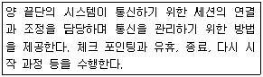
- 데이터 링크 계층(Data link layer)
- 네트워크 계층(Network layer)
- 전송 계층(Transport layer)
- 세션 계층(Session layer)
(정답률: 66%)
32. ISO OSI 7계층 중 부호체계 및 암호화 등을 하는 계층은 무엇인가?
- 물리 계층(Physical layer)
- 세션 계층(Session layer)
- 응용 계층(Application layer)
- 표현 계층(Presentation layer)
(정답률: 46%)
33. 다음 중 RFID 미들웨어의 활용 효과가 아닌 것은?
- RFID 애플리케이션 개발 생산성 증대
- 기업의 RFID 도입 비용 절감 및 생산성 향상 효과
- RFID 리더의 형태 결정
- RFID 정보 공유 효과
(정답률: 50%)
34. RFID 미들웨어의 주요 기능 중 사용자가 화면을 통해 원격으로 여러 리더기의 동작 상태를 감시하고 개별 리더기를 설정/작동/제어하는 기능을 제공하는 것은?
- 이기종 복수 RFID 리더기 관리
- RFID 데이터처리
- 응용 시스템과의 연동
- RFID 정보공유
(정답률: 52%)
35. ALE 1.0 규격을 확장한 ALE1.1에 추가된 주요 특징은 무엇인가?
- Writing API
- EPC 데이터를 수집
- 필터링
- Reading API
(정답률: 55%)
36. 다음 ALE(Application Level Events) 개념도에서 Client3 Event Cycle을 옳게 나열한 것은?
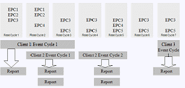
- EPC1, EPC2, EPC3
- EPC3, EPC4, EPC5
- EPC3, EPC5
- EPC1, EPC2, EPC4, EPC5
(정답률: 53%)
37. EPCIS Specification framework의 계층에 해당하지 않는 것은?
- 데이터 정의 계층
- 추상화 데이터 모델 계층
- 전송 계층
- 서비스 계층
(정답률: 36%)
38. 다음 중 추상화 데이터 모델 계층(Abstract Data Model Layer)의 구성요소가 아닌 것은?
- 이벤트 데이터(Event Data)
- 마스터 데이터(Master Data)
- 미들웨어(Middleware)
- 어휘 요소(Vocabulary Element)
(정답률: 58%)
39. 다음이 설명하는 것은 무엇인가?
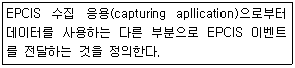
- EPCIS Capture Interface
- EPCIS Query Control Interface
- EPCIS Query Callback Interface
- EPCIS Accessing Application
(정답률: 38%)
40. 다음 중 DNS message packet에 대한 설명으로 옳지 않은 것은?(영역 : 설명)
- Header : 선언부이며, 전체 길이 정보 저장
- Question : DNS에 질의하는 이름을 저장
- Answer : DNS로부터 수신한 정보를 저장
- Authority : 추가적인 정보 저장
(정답률: 55%)
41. 다음 ( ) 안에 공통으로 들어갈 알맞은 말은?
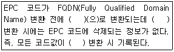
- EPC-IS
- DS
- URN
- ONS
(정답률: 42%)
42. EPC 코드가 FQDN(Fully Qualified Domain Name)으로 변환하는 절차의 가장 첫 단계는 무엇인가?
- EPC의 각 영역을 점으로 구분
- 역순으로 배열
- 직렬영역 내 직렬 코드 삭제
- EPC ONS의 Root ONS의 주소를 붙임
(정답률: 54%)
3과목: 정보보호
43. 다음이 설명하고 있는 단체는?
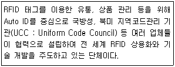
- OECD
- UN 가이드라인
- EPCglobal
- CASPIAN
(정답률: 57%)
44. 다음 중 RFID에서 프라이버시 보호를 위한 가이드라인의 주요 내용이 아닌 것은?
- 제3자 공유의 원칙
- 사전신고의 원칙
- 이용목적 심의의 원칙
- 제한적 동의의 원칙
(정답률: 54%)
45. 다음 중 기존 정보 시스템과 비교할 때 RFID 정보 시스템의 차이점이 아닌 것은?
- 정보 매개 요소와 정보 자체는 개인과 직접 관련 지어짐
- 사용자 변경 불가능
- 태그 식별 코드
- 정보에는 물품 정보, 제조업체 정보(업체), 이력 정보, 실시간 정보(업체)가 있음
(정답률: 24%)
46. 다음 ( ) 안에 들어갈 알맞은 말은 무엇인가?
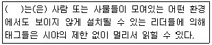
- 숨겨진 태그
- 숨겨진 리더
- 개인 추적과 프로파일링
- 이력 정보
(정답률: 41%)
47. RFID 보안기술 중 다음이 설명하는 주요 보안 취약점은 무엇인가?
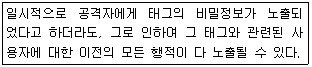
- 정보 유출
- 추적 가능성
- 주요 프라이버시 위협사항
- 전방향 프라이버시 문제
(정답률: 57%)
48. RFID 보안을 위한 물리적 해결방안 중 RFID 태그가 사용하는 특정 주파수가 통과할 수 없도록 하는 패러데이 케이지(Faraday Cage) 등의 전파 차단막으로 태그를 감추어 임의의 리더기가 태그에 접근하는 것을 막는 방법은?
- 능동형 전파 방해(Active Jamming)
- 블로커 태그(Blocker Tag)
- 프록싱(Proxying) 접근
- 태그 차폐(Shield the Tag)
(정답률: 57%)
49. RFID 태그에 저장된 정보의 내용이 노출되지 않는 경우라도, RFID 태그가 가지는 고유한 값을 통한 사용자의 위치추적이 문제될 수 있는 RFID의 보안 문제는 무엇인가?
- 전방향 프라이버시 문제
- 정보 유출 문제
- 추적 가능성 문제
- 감시 위협의 문제
(정답률: 49%)
50. 다음 중 RFID의 일반적 공격기법에 대한 설명으로 옳은 것은?
- 도청 공격 : 상대방의 네트워크에 OS버전과 네트워크 데몬들의 목록을 알아내는 것
- 스푸핑(Spoofing) : 네트워크상에서 전달되는 모든 패킷들을 감시
- 트래픽 분석(Traffic analysis) : 유인태그를 만들고 실제 제품과 바꾸는 공격
- 재전송 공격(Replay attack) : 공격자가 도청으로 획득한 정보를 이용하여 적당한 태그로 가장하여 공격
(정답률: 45%)
51. 다음이 설명하는 공격 방식은 무엇인가?
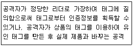
- 스푸핑(Spoofing)
- 스니핑(Sniffing)
- 스캐닝(Scanning)
- 서비스 거부(Denial of Service)
(정답률: 58%)
52. RFID에 대한 물리적인 공격 방법 중 프라이버시 침해 우려가 있는 공격으로 중간자 공격 방식(Man-Inthe-Middle)과 유사한 공격 방법은 무엇인가?
- 단순전력분석(SPA) 및 차분전력분석(DPA)
- 템피스트(Tempest) 공격 및 프로빙(Probing) 공격
- 타이밍분석(Timing Analysis) 공격
- 차분오류 분석(DFA)
(정답률: 60%)
53. RFID 보안 및 안전성 요구 사항 중 태그는 패스워드 기능으로 알려진 정보의 변경이나 삭제를 막을 수 있어야 하는 것은 무엇인가?
- 익명성
- 무결성
- 기밀성
- 인증성
(정답률: 45%)
4과목: 도입절차
54. RFID 시스템을 구축하고자 할 때의 주파수 선정 시 고려사항 중 인식거리 측면의 고려사항과 가장 거리가 먼 것은?
- 해당 개체정보를 정확히 인식할 수 있는 주파수 대역의 고려
- 취득하고자 하는 정보만을 열람할 수 있도록 RFID 리더의 출력의 고려
- 부착 대상의 물성과 환경에 따라 인식 특성이 상이 하므로 이에 따른 주파수 대역 선정
- 대량의 태그 도입에 따른 태그의 가격 고려
(정답률: 56%)
55. RFID 안테나 중 대표적인 UHF 안테나에 대한 설명으로 옳지 않은 것은?
- UHF 안테나에는 선형편파 안테나와 원형편파 안테나로 구분된다.
- 선형편파 안테나가 원형편파 안테나보다 인식거리가 길다.
- 태그의 안테나 방향과 리더의 안테나 방향이 일정 하지 않은 환경에서는 원형편파 안테나보다는 선형편파 안테나를 선호한다.
- 인식 환경에 따라 안테나를 추가로 설치할 수 있다.
(정답률: 64%)
56. 태그 부착 방법에 대한 고려사항 중 부착 대상물에 따른 고려사항이 아닌 것은?
- 태그 부착면의 재질
- 태그 부착면의 사이즈
- 태그 부착면의 투명도
- 태그 부착대상의 형태
(정답률: 66%)
57. RFID의 안테나 종류 중 방향성이 없기 때문에 RFID 태그를 인식할 때에 평면의 어느 방향이든 인식률이 거의 일정한 안테나는?
- 선형편파 안테나
- 원형편파 안테나
- 수직편파 안테나
- 수평편파 안테나
(정답률: 66%)
58. RFID 시스템의 고려사항 중 설정된 비즈니스 모델과 요구사항을 토대로 RFID를 둘러싼 인프라를 설계하는 과정은?
- 비즈니스 및 요구사항 모델링
- 아키텍처 및 디자인
- 시스템 기술 구조 설계
- 개발 및 측정
(정답률: 59%)
59. RFID 도입을 위한 정량적/정성적 목표 설정에서 바코드와 RFID 기술과의 차이점 중 정량적 목표로 옳지 않은 것은?
- 고객 편의성
- 비용 절감
- 작업시간 축소
- 오류율 감소
(정답률: 39%)
60. RFID 도입을 위한 조직구성 중 프로젝트 개발팀의 역할이 아닌 것은?
- RFID 도입을 위한 기본계획 수립
- 기존 정보시스템 분석을 통한 RFID 적용 범위 도출
- RFID 시스템 구축
- 현황 조사
(정답률: 49%)
61. RFID 제품들 중 리더와 미들웨어의 연결 방법과 가장 거리가 먼 것은?
- 직렬 통신(Serial communication)
- 이더넷(Ethernet)
- 병렬 통신(parallel communication)
- 무선 랜 통신(Wireless LAN)
(정답률: 44%)
62. RFID 시스템 구축은 비즈니스 및 요구사항 모델링, 아키텍처 및 디자인, 시스템 기술 구조 설계의 절차 과정을 거치게 된다. 이외에 추가적으로 고려할 수 있는 사항으로 무엇인가?
- 비즈니스 요구사항
- 비용항목 나열
- 적절한 구축 프로그램 선택
- 유지보수 및 평가
(정답률: 67%)
63. RFID 도입을 위한 조직을 구성할 때, 추진 조직에는 3가지 형태가 있다. 다음 설명 중 옳지 않은 것은?
- SI(System Integration) 업체에 의뢰하는 경우에는 비용이 발생하는 단점과 SI 업체가 선호하는 하드웨어 제품이 선정될 가능성 등의 단점이 있다.
- 회사 내에서 자체적으로 시스템 구축을 주관한다면 수행 조직을 해당 회사의 프로젝트 조직으로 간주하여 구축 후 해체한다.
- 자체 IT 조직에서 RFID 하드웨어 선정 및 시스템 설계 등을 모두 할 경우에는 RFID 지식의 결여에 따른 어려움 때문에 실패 가능성이 높다.
- RFID 컨설팅 회사에 의뢰하는 경우 단점들을 보완 할 수 있으나 추가적인 비용 발생의 단점이 있다.
(정답률: 50%)
64. RFID 시스템 도입의 목표 중 단기적이고 간접적인 목표와 가장 거리가 먼 것은?
- 노동 비용 감소, 높은 정확성, 소비자 편의성
- 의무화 이행, 오랜 기간 직접적인 이익을 얻기 위한 준비 작업
- FDA 요구에 의한 의약품 태그 부착
- 할인마트의 요구에 의한 공급업체 팔레트와 상자별 태그 부착
(정답률: 37%)
5과목: RFID 표준 및 법제도
65. 공구 관리용 RFID에 대한 규격은 무엇인가?
- ISO 69873
- ISO 10374
- ISO 14815
- ISO 14223
(정답률: 48%)
66. 규격 ISO/IEC 18000-3으로 스마트카드에 사용되는 주파수 무엇인가?
- LF
- UHF
- HF
- 마이크로파
(정답률: 39%)
67. 다음 주파수 대역 중 우편물이나 택배의 수화물 추적이 용이한 주파수 대역은?
- 13.56MHz
- 433MHz
- 860~960MHz
- 2.45GHz
(정답률: 49%)
68. 다음 중 UHF 대역의 단점이 아닌 것은?
- 태그의 크기가 큼
- 433MHz 경우 태그 가격이 높음
- 433MHz 경우 능동형 태그만 이용 가능
- 국가마다 다른 전파 규제
(정답률: 32%)
69. 정해진 주파수 대역 내에서 호핑 채널이 겹치지 않고 호핑 할 수 있는 최소 시간은 몇 초인가?
- 0.1초
- 0.2초
- 0.4초
- 0.5초
(정답률: 50%)
70. 다음 중 주파수 대역별 장점이 옳게 짝지어지지 않은 것은?
- 135kHz : 주파수 전력 등의 규제가 비교적 자유롭다.
- 433MHz : 고속 전송과 태그 소형화 모두 가능하다.
- 900MHz : 다중 태그 인식과 인식거리가 가장 뛰어나다.
- 2.45GHZ : 주파수 간섭 영향을 거의 받지 않는다.
(정답률: 55%)
71. 다음이 설명하는 것은 무엇인가?
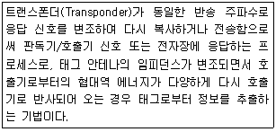
- 맨체스터(Manchester)
- 전자파 산란
- 전자식별 기법
- 후방 산란 기법
(정답률: 64%)
72. 우리나라와 같이 좁은 주파수 대역을 사용하는 지역에 적합한 UHF 대역 RFID의 기술기준 방식은?
- ASK
- PSK
- LBT
- OOK
(정답률: 63%)
73. 다음 중 EPCglobal 네트워크의 구성요소가 아닌 것은?
- ALE(Application Level Events)
- EPCIS(EPC Information Service)
- 디스커버리 서비스(Discovery Service)
- DNS(Domain Naming Service)
(정답률: 48%)
74. 다음 중 EPC 버전을 위한 EPC 코드체계의 설명으로 옳은 것은?
- 헤더란 코드에서 데이터와 필터 값을 정의한다.
- 상품코드는 EAN 바코드의 업체코드에 해당하며 약 3천 개의 작은 양의 코드를 할당할 수 있다.
- 일련번호란 각기 다른 상품의 동일한 식별 번호이다.
- 업체코드란 28비트의 용량으로 7개의 숫자와 문자를 조합하여 약 2억 6천만 개 업체코드를 할당할 수 있다.
(정답률: 50%)
75. EPCglobal에 대한 설명 중 옳지 않은 것은?
- EPCglobal은 1999년 미국 MIT에 Auto-ID 센터를 설립하고, 센터의 성과의 실용화 추진을 목적으로 EPCglobal이 출범하게 되었다.
- EPCglobal은 상품 코드의 국제표준 개발/관리기 구인 EAN과 UCC의 통합으로 탄생한 GS1이 2003년 11월에 설립한 자회사이다.
- EPCglobal의 궁극적인 목표는 제조사들의 모든 호환 가능한 태그와 리더기가 유사한 방식으로 통신이 가능하게 하는 것이다.
- EPCglobal에서 구분한 RFID 클래스는 총 6개가 있다.
(정답률: 44%)
76. 다음이 설명하는 모바일 RFID 서비스 시스템 구성은 무엇인가?
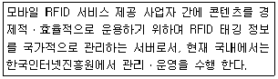
- ODS(Object Directory Service)
- OIS(Object Information Service)
- Root ODS
- 외부 콘텐츠 서버
(정답률: 50%)
77. 다음 중 서버의 일종으로서 RFID 태그 인식 시 휴대폰을 통하여 궁극적으로 보여줄 정보가 콘텐츠 서버의 어느 위치에 있는지(주소)를 지정해주는 기능을 하는 것은?
- RFID 리더
- ODS(Object Directory Service)
- OIS(Object Information Service)
- Root ODS
(정답률: 62%)
78. RFID를 위한 동물코드 구조에서 정의한 코드는 무엇인가?
- ISO/IEC 15459
- ISO 11785
- ISO 11786
- ISO 11784
(정답률: 25%)
79. 다음 ( ) 안에 들어갈 알맞은 용어는 무엇인가?
- 1차원 바코드
- 2차원 바코드
- 3차원 바코드
- 4차원 바코드
(정답률: 39%)
80. 개별자산을 위해 사용되는 EPC 코드는 무엇인가?
- SSCC(Serial Shipping Container Code)
- GIAI(Gloval Individual Asset Identifier)
- DoD(the United States Department of Defense)
- GID(Global IDentifier)
(정답률: 41%)